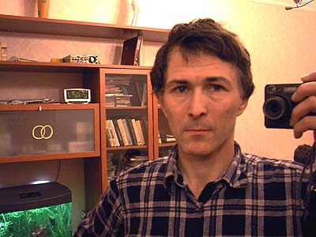

Меня зовут
Евгений Корниенко
адрес:
cordially@narod.ru . Комментрии можно
писать в конце этой странички.
Пишите, если есть идеи по темам сайта
- объяснение физического существования
- природа сознания
- философия ИИ
- алгоритм обучения робота
- оформление и ошибки на сайте

При перепечатке или показе материалов с сайтов
- cord70.github.io/cyber ( cyber-ek.ru cordially.narod.ru )
- cord70.github.io/photo ( photo-ek.ru album-ek.narod.ru )
пожалуйста, показывайте активную ссылку на сайт или на цитируемую страницу.
Автор сайта

Родился в 1955 году в Эстонии. Отец служил офицером, мама - учителем. После увольнения отца из армии семья переехала в Ростовскую область.
Окончил МФТИ, работал в области нестационарной аэродинамики ракет. Есть статьи, изобретения. В 1996 году уволился из НИИ. Сейчас работаю инженером в частной фирме. Появилось время для создания сайта.
Первой на сайте появилась статья о природе существования Происхождение пространства. Я написал её в 1990 году в результате увлекательных размышлений о том, куда же, к какой картине мира приведёт нас исследование природы в конце концов.
В 1996-99 г. я разбирался с природой сознания. Статья Механизмы сознания в основном составлена из моей переписки в конференциях в 1996-97г. В последнее время занимаюсь алгоритмом самообучения и программой. Впрочем, занимаюсь этим хобби редко. Быстрее всего сейчас обновляется раздел сайта Фотографии и хобби , так как фотографировать легко.
Евгений Корниенко